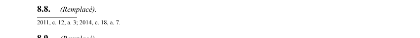

art-8.8-LSST : disposition remplacée
Un article du wiki ⚖️ Recueil législatif
🌐 LegisQuébec · 📄 PDF officiel (page 8)
Texte officiel : capture du PDF

🔗 Ouvrir a cette page : LSST.pdf : page 8 · texte a jour au 26 mars 2024
En bref
Disposition remplacée. Il s'agit d'une obligation.
Voir aussi
- art. 8.6 : publication entente Kahnawake en ligne · toute entente est publiée sur les sites Internet du ministère du Travail, du ministère du Conseil exécutif et de la CNESST au plus tard à la date de son entrée en vigueur et jusqu'au cinquième anniversaire de sa cessation d'effet.
- art. 8.7 : entente administrative Conseil Mohawk · faculté : la CNESST peut conclure avec le Conseil Mohawk de Kahnawake une entente administrative pour faciliter l'application d'une entente visée à l'article 8.2.
- art. 8.9 : disposition remplacée · disposition remplacée.
- art. 8.10 : disposition remplacée · disposition remplacée.
- ↑ Loi : LSST
Pages qui pointent ici (4)
- art-8.10-LSST, remplacé c a c Recueil législatif
- art-8.6-LSST, Commission Recueil législatif
- art-8.7-LSST, inspecteur Recueil législatif
- art-8.9-LSST, remplacé c a c Recueil législatif